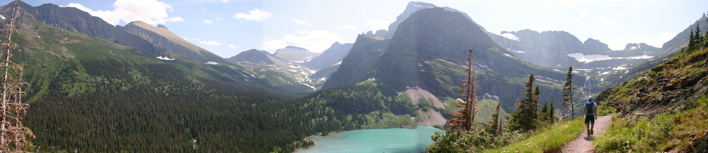
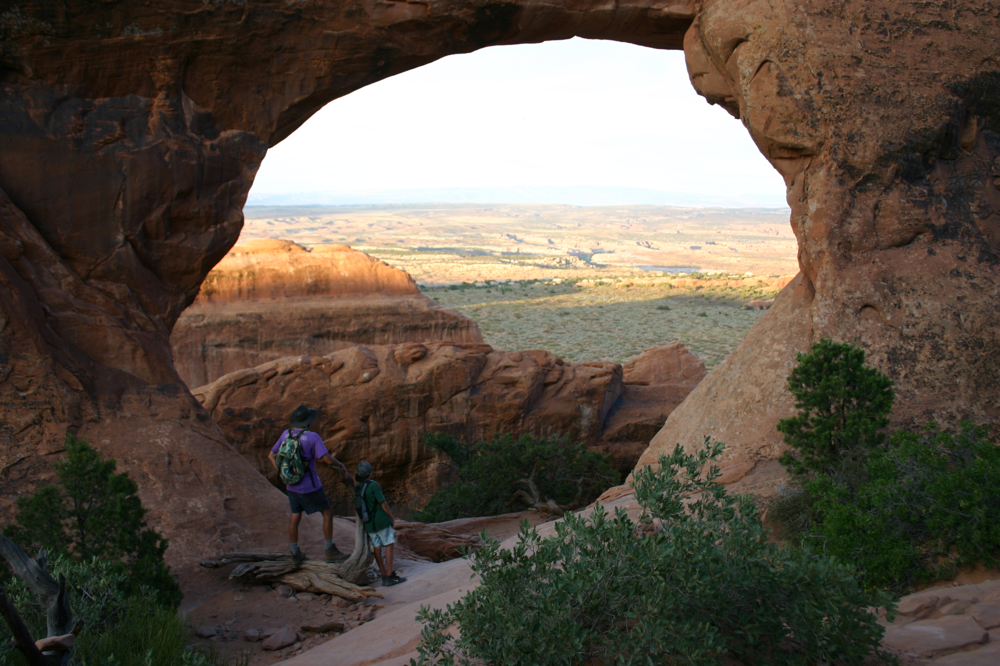
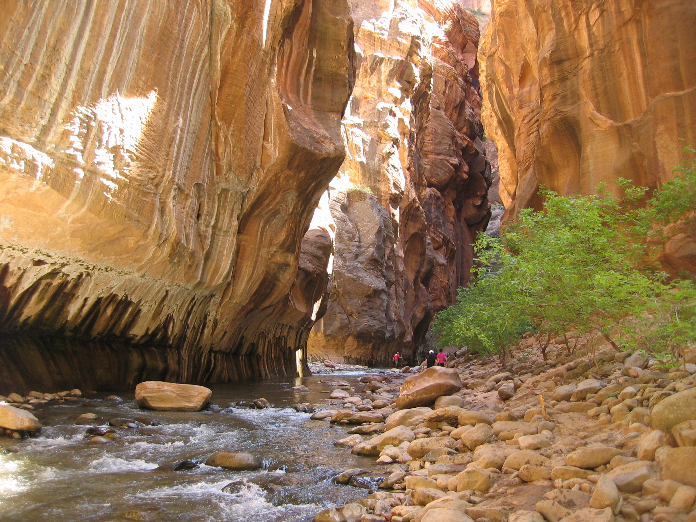
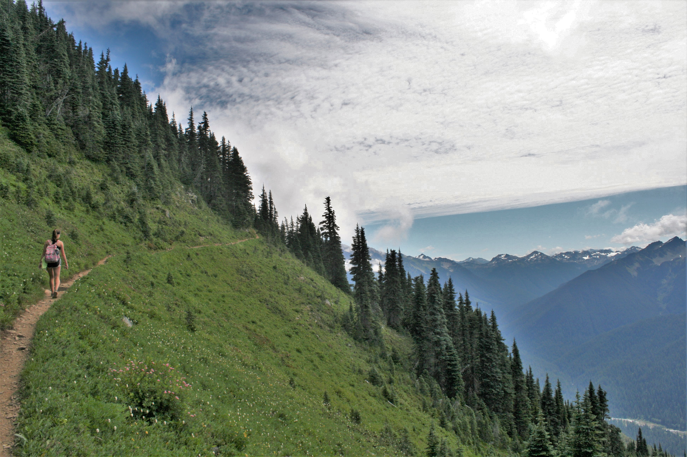

Top Five National Parks
Have you ever woken up one morning and decided you wanted to road trip across the country on a whim? Ok, it might just be me. However, I would not change anything about the three summers I spent road tripping across Western America. I chose my favorite place to highlight in this post in terms of the hiking experience.

Glacier National Park
Glacier National Park was like living in a fairytale. I swear I could hear fairies humming in the distance at one point or maybe I was just dehydrated after hiking 10 miles. Once you hiked a little bit away from the trailhead there was not a single soul in sight despite it being peak season in July. The trails made it feel as if I was frolicking through a field of wildflowers with water running down the rocks. Then I wandered around the corner to find mountain goats and bighorn sheep, and a grizzly bear, oh my! Wait that isn’t how the phrase goes, but it was surreal to see so many animals in one place.

Arches National Park
I never thought I’d say I like another part of Utah besides Lake Tahoe, but here I am writing a paragraph on why you should visit Arches over a resort destination. Arches it what I imagine Satan’s happy place to feel like besides all paying for your sins and that jazz. Although some might say taking an eight-mile hike in the hot desert sun was similar to a form of torture. Somehow the scenery still managed to transport me to a serene place. The sandstone red fins of rock are unique to Arches. If you're ever feeling that midlife crisis starting, escape to Arches.

Zion National Park
Everyone needs to trek through miles of water in a slot canyon at least once in their life and Zion National Park gives you the perfect opportunity to do this. Every second of this hike was definitely not a photo op as I hobbled through the rocky waters using a stick as a cane and tried not to scream as my toes became prunes. You don’t have to say thank you but I just want to mention I did everyone a favor by avoiding saying the word “moist”’’ in the previous sentence. The hike feels almost as if you are taking a long bath except when you get home you are going to take an actual shower.

Olympic National Park
My dad and I decided to take an 18.2-mile hike which at first when he mentioned it I was doing the same expression that is probably on your face right now. I did not understand why we couldn’t just be normal hikers and take an eight-mile hike instead. Next thing I knew I was up at 5 a.m. getting ready to do this long hike. However, it ended up being one of the most memorable outdoor experiences of my life. The hike was on a ridge that gave a view on both sides of a valley and another mountain ridge. The hike also contained two lakes and the famous view of the glacier, Mount Olympus.

Redwood National and State Parks
If you're wondering where you can find a forest of really big trees then look no further. The California Redwood Forests are full of giant sequoias or coastal redwoods which are the tallest trees on Earth. The Redwood Forest made all my tree-hugger dreams come true. I knew all those times I ate organic kale even when it tasted like grass and wore Birkenstocks even though it was a major fashion faux pas would pay off. However, looking at the same type of tree for hours can get boring so I suggest only spending a couple of days exploring the redwood forest.
Stay tuned for a new post about “micro-cations” which are all the rage because of the coronavirus ruining long periods of travel. Stay optimistic ladies and gentlemen, no one can steal our travel bug.